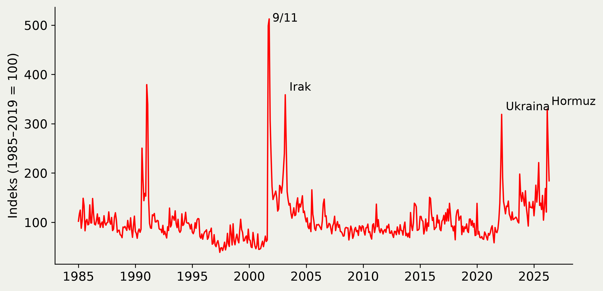
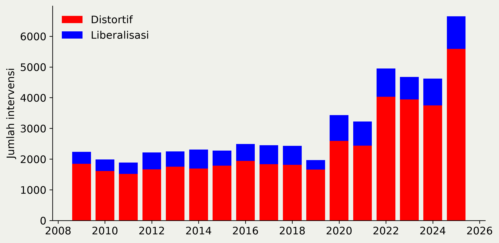
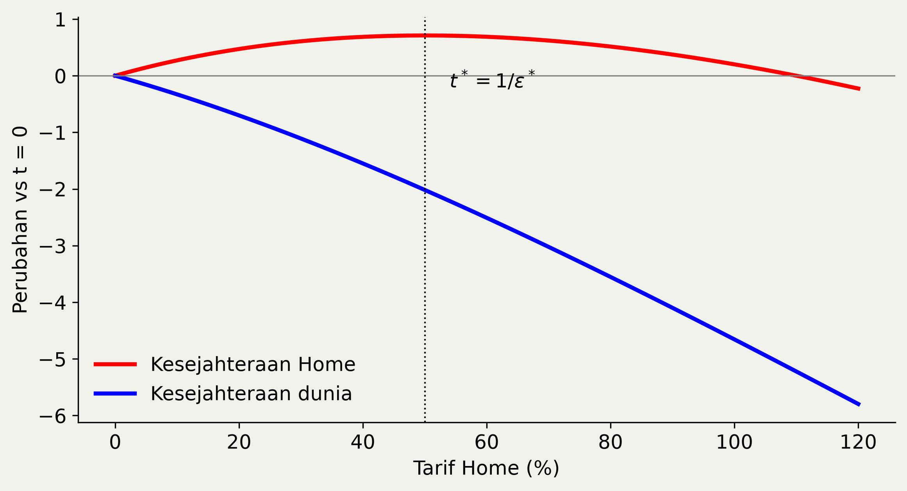
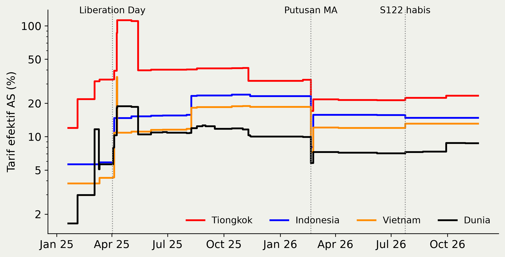
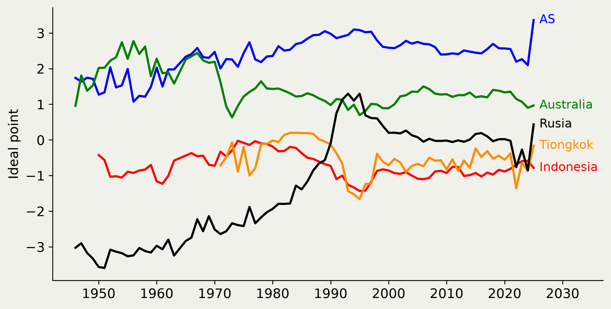
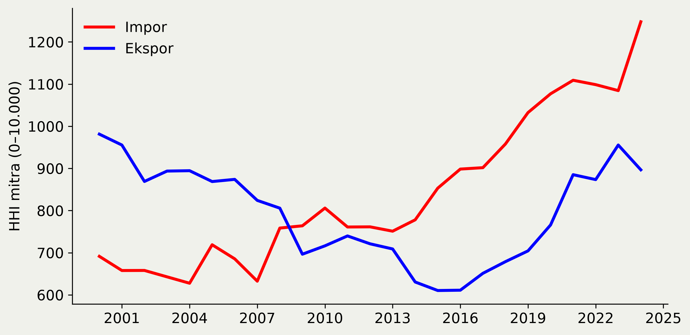
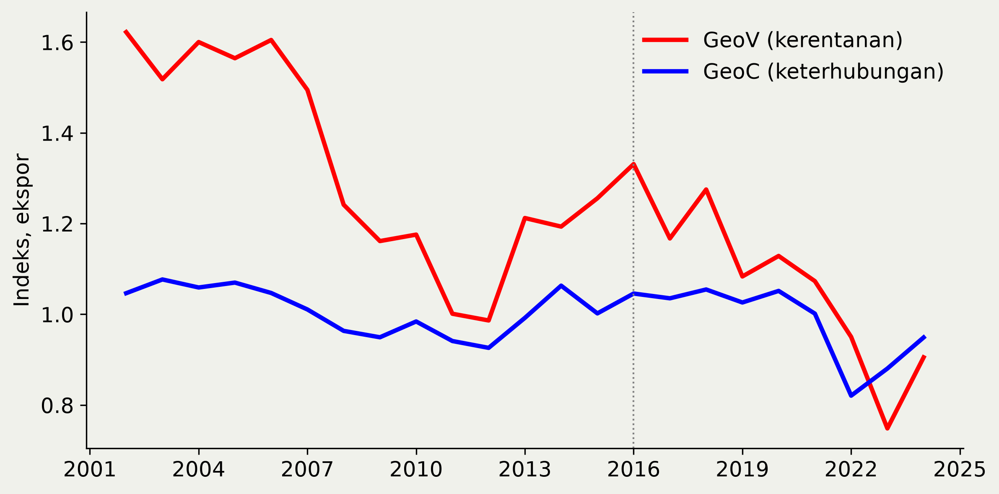
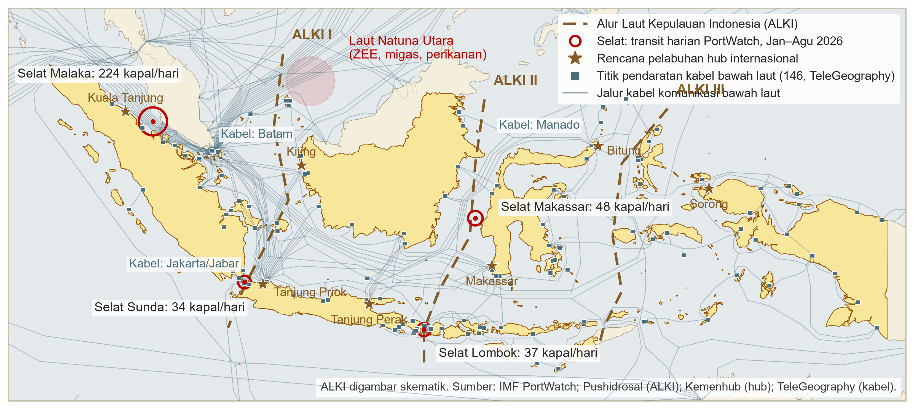

Ekonomi Internasional Lanjutan
Universitas Indonesia
20 November 2026
Tarif, embargo, kontrol ekspor, perjanjian dagang bersyarat.
Sanksi finansial, pembekuan cadangan, penyaringan investasi.
Juga: bantuan luar negeri, spionase dan serangan siber (Mohr dan Trebesch 2025).
Integrasi menaikkan opportunity cost perang; damai lebih menguntungkan.
Integrasi menciptakan ketergantungan yang bisa dijadikan senjata.
Bukti: globalisasi menekan perang besar, tetapi konflik kecil makin sering.
Indeks risiko geopolitik (GPR) bulanan, 1985–2026. Sumbu x: waktu; sumbu y: indeks berbasis frekuensi berita (rata-rata 1985–2019 = 100). Sumber: Caldara dan Iacoviello (2022).

Jumlah intervensi kebijakan industri baru di dunia per tahun pengumuman, 2009–2025, dipisah distortif dan liberalisasi. Sumbu x: tahun; sumbu y: jumlah intervensi. Sumber: GTA New Industrial Policy Observatory (NIPO), April 2026.

\[ t^{*} = \frac{1}{\varepsilon^{*}} \]
di mana \(t^{*}\) adalah tarif ad valorem yang memaksimalkan kesejahteraan Home, dan \(\varepsilon^{*}\) adalah elastisitas penawaran ekspor mitra terhadap harga yang diterimanya. Makin tidak elastis penawaran mitra, makin besar tarif optimal.
Simulasi keseimbangan parsial: permintaan impor Home linear, penawaran ekspor mitra dengan elastisitas konstan \(\varepsilon^{*}=2\). Sumbu x: tarif Home (%); sumbu y: perubahan kesejahteraan relatif terhadap perdagangan bebas. Sumber: perhitungan sendiri.

\[ \begin{aligned} t_H &= R_H(t_F) \\ t_F &= R_F(t_H) \end{aligned} \]
di mana \(t_H\) dan \(t_F\) adalah tarif Home dan Foreign, sedangkan \(R_H(\cdot)\) dan \(R_F(\cdot)\) adalah fungsi best response: tarif yang memaksimalkan kesejahteraan sendiri, diberikan tarif lawan. Keseimbangan Nash \((t_H^N, t_F^N)\) adalah titik potong keduanya.
| F: bebas | F: tarif | |
|---|---|---|
| H: bebas | (10, 10) | (6, 12) |
| H: tarif | (12, 6) | (8, 8) |
Tarif adalah strategi dominan bagi keduanya; hasil Nash (8, 8) lebih buruk dari perdagangan bebas (10, 10). Angka ilustratif.
Prediksi terms of trade tidak terbukti untuk AS: harga dunia tidak turun.
Tarif impor efektif AS (rata-rata tertimbang perdagangan, skala log), 20 Januari 2025 – 20 November 2026. Sumbu x: tanggal; sumbu y: tarif (%). Sumber: GTA US Tariff Estimates (estimasi model, 1.000 arus terbesar), diolah.

| Tanggal | Peristiwa |
|---|---|
| 2 Apr 2025 | Liberation Day: tarif resiprokal (IEEPA); Indonesia 32% |
| Jul–Agu 2025 | Kesepakatan: Indonesia turun ke 19% |
| 19 Feb 2026 | Indonesia–AS menandatangani ART |
| 20 Feb 2026 | Mahkamah Agung AS membatalkan tarif IEEPA |
| 24 Feb 2026 | Tarif global Section 122 (maks. 150 hari) |
| 24 Jul 2026 | S122 habis; diganti tarif Section 301 forced labor 10–12,5% |
\[ \mathbf{a} = (1-\beta)\,(\mathbf{I} - \beta \mathbf{G})^{-1} \boldsymbol{\theta} \]
di mana \(\mathbf{a}\) adalah vektor tindakan geopolitik negara (mis. pola voting PBB), \(\boldsymbol{\theta}\) adalah vektor kepentingan domestik, \(\mathbf{G}\) adalah matriks keterhubungan antarnegara, dan \(\beta\) adalah bobot insentif untuk selaras dengan mitra. Versi sederhana dari kerangka Liu dkk. (2026).
Ideal point lima negara dari voting Majelis Umum PBB, 1946–2025. Sumbu x: tahun; sumbu y: ideal point (makin tinggi makin selaras dengan tatanan liberal pimpinan AS). Sumber: Bailey, Strezhnev, dan Voeten (2017).

| Skenario antar-blok | Rugi PDB | Paling rugi |
|---|---|---|
| Tarif +20% | 0,1–2,3% | Kazakhstan, Maroko |
| Biaya dagang +20% | 0,6–4,6% | Maroko, Asia Tenggara (−2,9%) |
Tidak ada pemenang; Asia Tenggara termasuk yang paling rugi (Javorcik dkk. 2023).
\[ HHI = 10.000 \sum_{j} s_{j}^{2} \]
di mana \(s_j\) adalah pangsa mitra \(j\) dalam total impor (konsentrasi pemasok) atau ekspor (konsentrasi pasar) Indonesia. Rentang 0–10.000; makin tinggi makin terkonsentrasi.
HHI mitra dagang Indonesia untuk impor dan ekspor, 2000–2024. Sumbu x: tahun; sumbu y: HHI (0–10.000). Sumber: UN Comtrade, diolah.

| Produk (HS6) | Impor (US$ M) | Pemasok utama | Pangsa |
|---|---|---|---|
| BTS telekomunikasi | 2,98 | Tiongkok | 99,9% |
| Laptop | 1,50 | Tiongkok | 98,6% |
| Silicon wafer | 1,65 | Tiongkok | 88,0% |
| Kedelai | 1,19 | AS | 86,8% |
| Kendaraan listrik | 2,60 | Tiongkok | 79,3% |
| Bijih besi | 1,28 | Australia | 70,4% |
M = miliar. Hasil awal DEN Economic Lab dari UN Comtrade/WITS; jangan dikutip.
Pangsa pemasok, pangsa ekspor dunia, substitusi (Arjona, Connell, dan Herghelegiu 2023; Productivity Commission 2021).
Paparan tidak langsung lewat hub dan rantai multi-tier (Korniyenko, Pinat, dan Dew 2017; Baldwin, Freeman, dan Theodorakopoulos 2025).
Bergantung pada mitra bersahabat berbeda dengan bergantung pada mitra yang mampu koersi.
Lolos tiga filter = rentan; lalu diuji apakah dipakai industri esensial (Productivity Commission 2021).
\[ GeoV_i = \sum_{j} w_{ij}\, d_{ij} \]
di mana \(w_{ij}\) adalah pangsa transaksi negara \(i\) (mis. ekspor) ke mitra \(j\), dengan \(\sum_j w_{ij}=1\), dan \(d_{ij}\) adalah jarak ideal point antara \(i\) dan \(j\). GeoV tinggi: transaksi terkonsentrasi pada mitra yang jauh secara politik (Aiyar dan Ohnsorge 2024).
\[ GeoC_i = \sqrt{\frac{N}{N-1}\sum_{j} w_{ij}\,(d_{ij}-GeoV_i)^2} \]
di mana \(N\) adalah jumlah mitra, dan notasi lain sama seperti GeoV. GeoC adalah simpangan baku tertimbang jarak geopolitik: GeoC tinggi berarti berdagang dengan kedua sisi spektrum, yaitu negara connector.
GeoV dan GeoC ekspor Indonesia, 2002–2024; garis putus = 2016. Sumbu x: tahun; sumbu y: nilai indeks. Sumber: database Aiyar dan Ohnsorge (2024).

Negosiasi dengan AS; kelola tarif dan excess capacity Tiongkok.
Deregulasi dan reformasi domestik agar menyerap relokasi.
Jangka panjang: integrasi regional (ASEAN, RCEP) dan aturan multilateral. Sumber: Pangestu.
Titik rawan maritim Indonesia. Sumber: IMF PortWatch, Pushidrosal, Kemenhub, TeleGeography.

Economic security juga soal keuangan, chip & teknologi, kabel data, energi, pangan. Tidak dibahas hari ini.